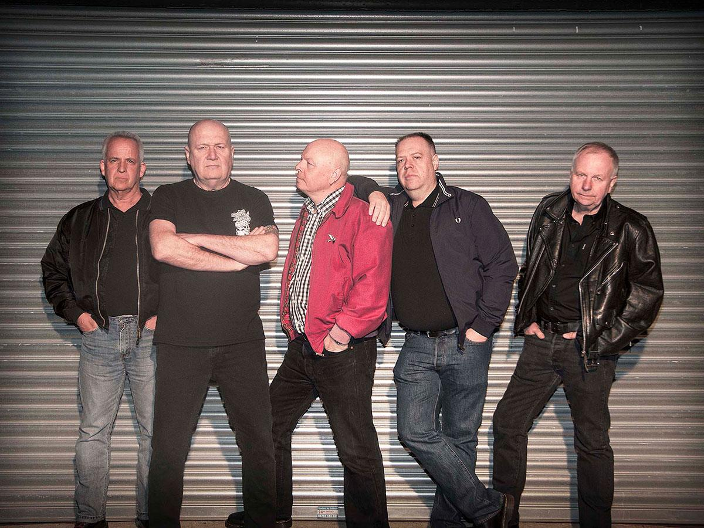
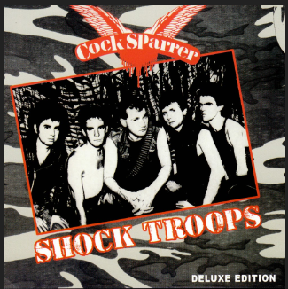
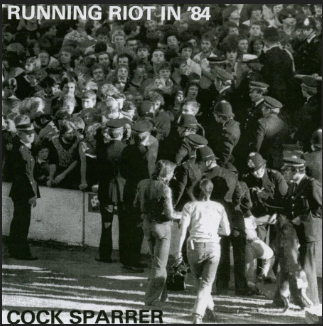
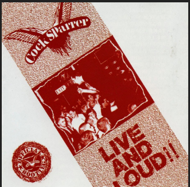
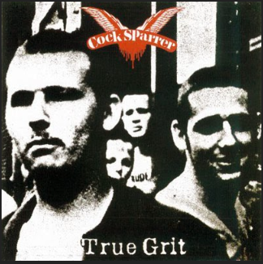

Cock Sparrer
Cock Sparrer es un grupo de Oi! originario del este de Londres, formado en 1974. Sus miembros iniciales fueron Colin McFaul (voces), Micky Beaufrey (guitarra), Steve Burgess (bajo) y Steve Bruce (batería). A pesar de sus inicios humildes, son considerados unos de los padres fundadores del movimiento Oi!. Su música refleja la vida en los barrios bajos de Londres y sus letras contienen influencias del punk, el fútbol y la cultura de la clase trabajadora.
Discografía
1982 - Shock Troops (Deluxe Edition 2001)

01 - Where Are They Now?
02 - Riot Squad
03 - Working
04 - Take 'em All
05 - We're Coming Back
06 - England Belongs To Me
07 - Watch Your Back
08 - I Got Your Number
09 - Secret Army
10 - Droogs Don't Run
11 - Out On An Island
12 - Argy Bargy
13 - Colonel Bogey
14 - I Need A Witness (Bonus Tracks)
15 - Platinum Blonde (Bonus Tracks)
16 - What's It Like To Be Old (Bonus Tracks)
17 - Teenage Heart (Bonus Tracks)
18 - Run For Cover (Bonus Tracks)
1984 - Runnin' Riot In '84

01 - Run With The Blind
02 - Is Anybody There?
03 - Price Too High To Pay
04 - Think Again
05 - Don't Say A Word
06 - The Sun Says
07 - They Mean Murder
08 - Closedown
09 - Chip On My Shoulder (Live)
10 - Runnin' Riot (Live)
1985 - Live And Loud! (Reedición 2002)

01 - Riot Squad
02 - Watch Your Back
03 - I Got Your Number
04 - Take’em All
05 - We Love You
06 - Working
07 - Argy Bargy
08 - Where Are They Now
09 - White Riot
10 - Runnin’ Riot
11 - The Sun Says
12 - Secret Army
13 - England Belongs to Me
14 - Chip on My Shoulder
1987 - True Grit

01 - We Love You
02 - Sister Suzie
03 - Platinum Blonde
04 - Taken For A Ride
05 - Again And Again
06 - Runnin' Riot
07 - Chip On My Shoulder
08 - Watcha Gonna Do About It
09 - Teenage Heart
10 - I Need A Witness